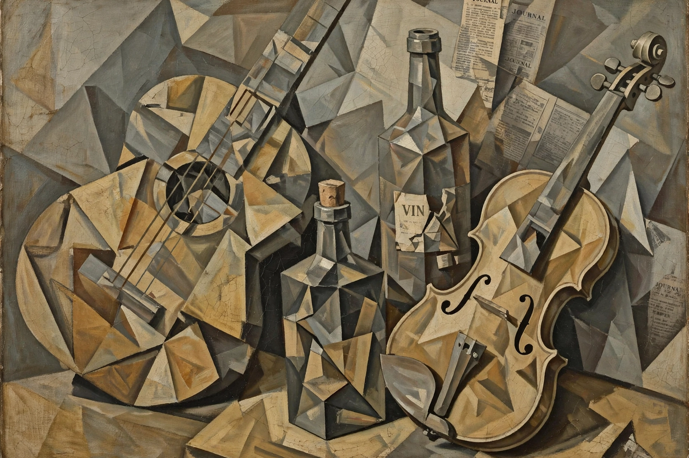

From Wikipedia, the free encyclopedia
| Cubism | |
|---|---|
| Movement | Avant-garde art |
| Founders | Pablo Picasso, Georges Braque |
| Period | c. 1908–1914 (pioneering phase) |

Cubism is an early-20th-century avant-garde art movement, pioneered by Pablo Picasso and Georges Braque in Paris from about 1908, in which objects are analysed, broken up and reassembled in abstracted, geometric form, often showing several viewpoints at once. It is widely regarded as the most influential art movement of the 20th century.
Art historian Louis Vauxcelles coined the name after describing Braque's work as made of 'cubes'. The movement is usually divided into an analytic phase (muted colours, dense fragmentation) and a later synthetic phase (simpler shapes, brighter colour, collage and papier collé). Picasso's Guernica later applied a related visual language to a vast anti-war subject. Cubism reshaped painting, sculpture, architecture and design.